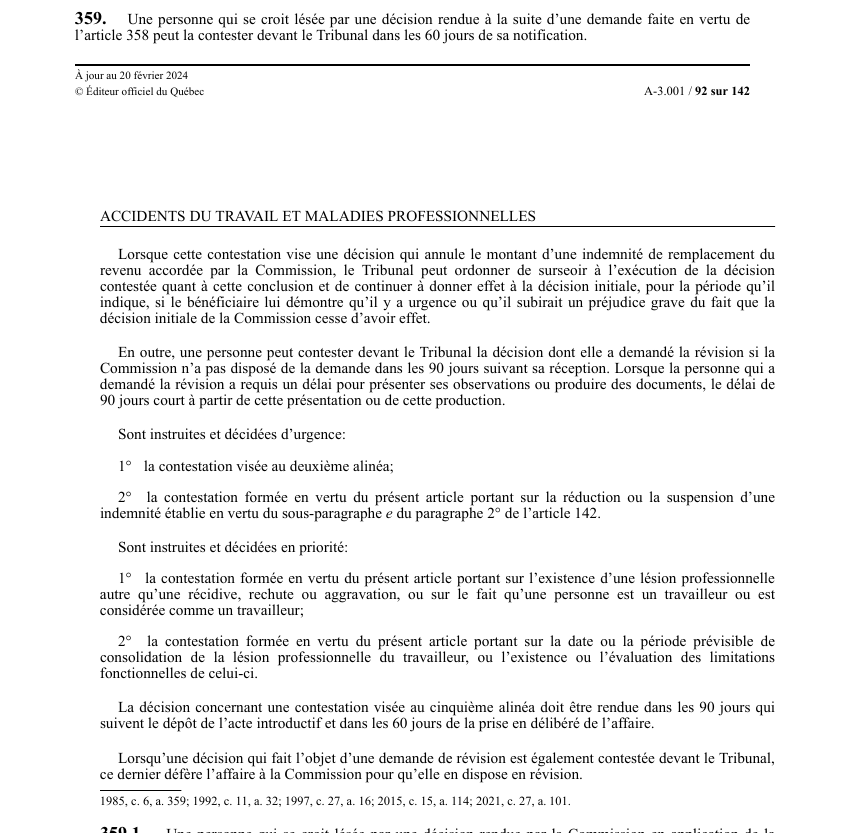

art-359-LATMP : contestation devant le TAT, 60 jours
Un article du wiki ⚖️ Recueil législatif
En bref
Deuxième marche du recours : après la révision administrative, la contestation devant le Tribunal, à porter dans les 60 jours. Le silence prolongé de la Commission ouvre la même porte.
- Visé : personne qui se croit lésée par la décision rendue en révision · Nature : recours devant le Tribunal
- Délai principal : 60 jours de la notification de la décision rendue à la suite d'une demande faite en vertu de art. 358.
- Recours ouvert aussi par l'inaction : si la Commission n'a pas disposé de la demande de révision dans les 90 jours de sa réception, ce délai courant plutôt de la présentation des observations ou de la production des documents lorsqu'un report a été demandé.
- Sursis possible : quand la contestation vise une décision annulant une indemnité de remplacement du revenu, le Tribunal peut ordonner de continuer à donner effet à la décision initiale, si le bénéficiaire démontre l'urgence ou un préjudice grave.
- Traitement accéléré : instruction d'urgence pour la contestation du 2e alinéa et pour la réduction ou la suspension d'une indemnité (art. 142, par. 2°, sous-par. e) ; instruction prioritaire pour l'existence d'une lésion professionnelle, le statut de travailleur, la date de consolidation et les limitations fonctionnelles.
- Délais imposés au Tribunal pour les affaires prioritaires : décision dans les 90 jours du dépôt de l'acte introductif et dans les 60 jours de la prise en délibéré.
🌐 LegisQuébec · 📄 PDF officiel (page 92)
Texte officiel : capture du PDF
{kind=link}

Toucher l'image pour l'agrandir🔗 Ouvrir a cette page : LATMP.pdf : page 92 · texte a jour au 20 février 2024
Repères
- 60 jours : délai de contestation, à compter de la notification.
- 90 jours : inaction de la Commission qui ouvre le recours direct au Tribunal.
- 90 jours et 60 jours : délais de décision du Tribunal (dépôt de l'acte introductif, prise en délibéré) pour les affaires du 5e alinéa.
Voir aussi
- art. 358 : demande de révision, 30 jours · étape préalable obligatoire.
- art. 359.1 · contestation d'une décision rendue par la Commission en application d'autres dispositions.
- art. 142 : réduction ou suspension d'indemnité · matière instruite et décidée d'urgence.
- 🔧 Modifié par : LMRSST art. 101 · modification du régime de contestation.
- 🏛️ Tribunal : TAT · Tribunal administratif du travail, division de la santé et de la sécurité du travail.
- ↑ Loi : LATMP
Pages qui pointent ici (15)
- art-101-LMRSST : modifie l'art. 359 LATMP Recueil législatif
- art-241-LATMP : appel révision Recueil législatif
- art-358-LATMP : demande de révision, délai de 30 jours Recueil législatif
- art-433-LATMP : appel révision Recueil législatif
- Contester une décision de la CNESST, les délais à ne pas manquer Droit du travail
- Convoqué au BEM, un médecin que tu n'as pas choisi Droit du travail
- Démarche en cas de lésion Droit du travail
- Évaluation médicale et BEM Droit du travail
- Gérer une réclamation CNESST côté employeur Droit du travail
- LATMP Recueil législatif
- LATMP : Chapitre X : Recours (révision et TAT) Recueil législatif
- LMRSST : Chapitre I : Modifications à la LATMP Recueil législatif
- Organismes du régime SST Droit du travail
- Procédures Recueil législatif
- Recours au TAT Recueil législatif